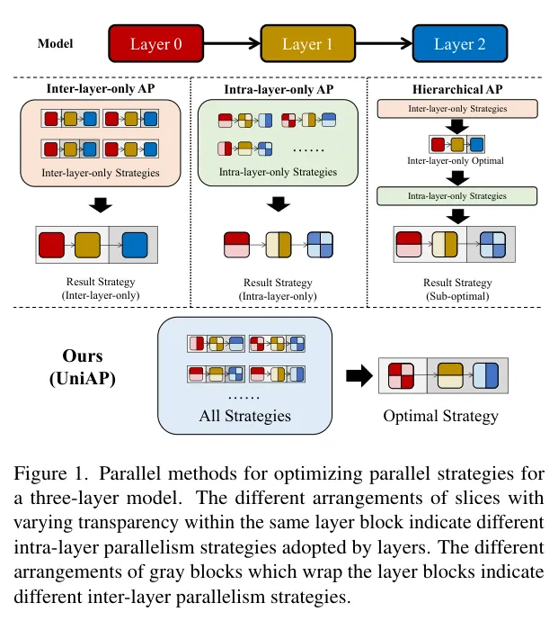
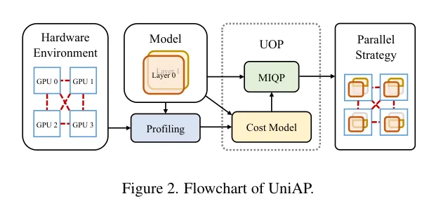
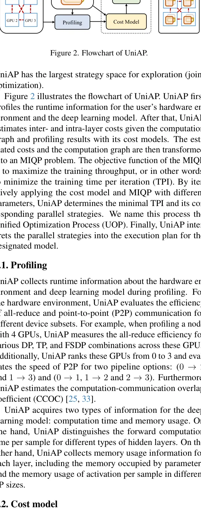
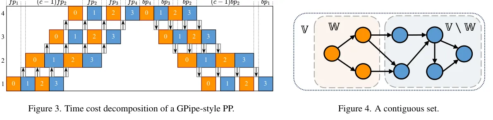
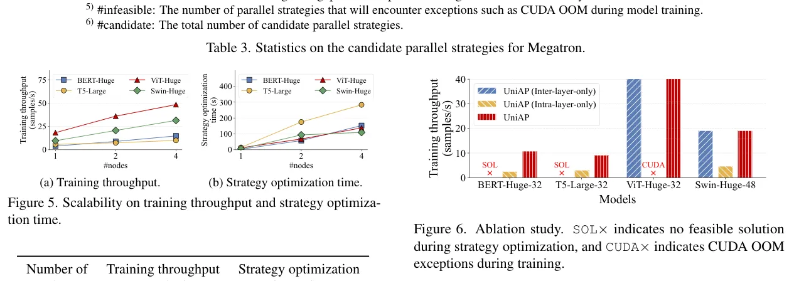

CVPR 2025 Finalist
UniAP: Unifying Inter- and Intra-Layer Automatic Parallelism by Mixed Integer Quadratic Programming
Hao Lin · Ke Wu · Jie Li · Jun Li · Wu-Jun Li
摘要 Abstract
见上方 arXiv / CVF 链接。
📝 精读笔记
灵魂一句
把"大模型分布式训练该怎么切"这件事，第一次做成 inter-layer（流水线 PP）和 intra-layer（DP/TP/FSDP）联合最优——以前的自动并行（AP）要么只优化一类、要么"先定 PP 再定层内"分层贪心，必然次优。UniAP 把整个并行策略空间编码成一个 混合整数二次规划（MIQP），目标=最小化每次迭代时间（TPI），交给 Gurobi 多线程求全局最优。5 个 Transformer 上吞吐最高 +3.80×、找策略最高快 107×。南京大学，CVPR 2025 Finalist。
问题 & 动机
手动并行（MP，如 Megatron）要专家调、不灵活；自动并行（AP）虽自动化但把两类策略分开/分层优化→次优。原文："existing AP methods suffer from sub-optimal solutions because they do not jointly optimize the two categories of parallel strategies (inter-layer and intra-layer)." 而且 MP 让普通用户随机选策略，Llama-7B 有 64.1%、13B 有 87.5% 概率直接训不起来（OOM/报错），就算能跑也只有 50% 概率优于中位吞吐。
核心方法（MIQP 统一建模）
流程（Fig 2）：Profiling（测硬件 all-reduce/P2P 效率、计算-通信重叠系数 CCOC；测模型逐层算时 + 显存）→ Cost model（时间：BP≈2×FP；通信=张量大小/带宽×CCOC；显存式1 ms=cdtype·ps/(ts·fs)，FP32 c=4、混精 FP16 c=8）→ MIQP（目标式2 min TPI=Σpi+Σoj+(c−1)·max(P∪O)；约束含 计算阶段/通信阶段/显存不 OOM/PP 子图连续/每层放一个 stage/每层选一个策略）→ UOP（Algorithm 1：枚举 GPU 数 n 的因子作 PP 度 deg、batch 因子作 micro-batch 数 c，逐组合 MIQP 求解取最小 TPI）。复杂度 O(|V|·|S|·√(Bn))。
关键结果（数值）
ENVC（8×A100 PCIe）Llama-7B：吞吐 4.63 vs Galvatron 1.22 = 3.80×，找策略快 11.83×（UniAP 选 8-stage PP + micro-batch 1，Galvatron 选 4-stage PP+2-way TP；PCIe 下 PP 通信量远小于 TP，UniAP 选得更对）。ENVA BERT-Huge：找策略 0.37min vs Galvatron 6.44min（17×）vs Alpa >40min（>107×）；Galvatron 在 Swin-Huge 上 CUDA OOM，UniAP 能解。ENVD-32（DCU 国产卡）Llama-7B：找策略 3.07min vs Megatron >8 小时（157×）。
亮点
联合最优（最大策略空间，消融 Fig 6 证明限制成 inter-only/intra-only 都会次优或 OOM）；MIQP 解可多线程并行搜，而 DP/贪心类（Galvatron/Alpa）因强数据依赖只能单线程→UniAP 找策略快几十上百倍；天然处理异构集群（每 stage 显存上限 m 可不同）+ 国产 DCU 卡。
疑问 / 边界
① 依赖商业 solver Gurobi，其它 solver 留作 future work（开源/license 是落地考量）；② MIQP 是 NP-hard，论文给 solver 设了时间上限当超参——超大模型/超多策略时是否仍秒级求解未充分压力测试（推断）；③ 关掉了 activation checkpointing 等正交技术以隔离变量，实际与重计算/offload 联合优化未覆盖；④ 主要在 ≤32 卡规模验证，千卡级未测（与用户 320 卡 PPU 训练规模有差距，需谨慎外推）。
📖 逐段精读 · 笔记
批量精读初稿，基于本地 PDF 全文（52k 字符 / 11 页）。最后更新 2026-06-21。
① Abstract（摘要）— 逐句精讲
原文（痛点句）："Existing AP methods suffer from sub-optimal solutions because they do not jointly optimize the two categories of parallel strategies (i.e., inter-layer parallelism and intra-layer parallelism)."
在说什么：现有自动并行（AP）方法之所以次优，根因是它们没有把两类并行策略放在一起（jointly）优化——一类是 inter-layer（层间，即流水线 PP），一类是 intra-layer（层内，即 DP/TP/FSDP）。为什么这么做（点评）：这一句是全文的"靶心"——作者不打"AP 还不够自动"这种泛问题，而是精准锁定"分开优化 → 丢掉两类之间的耦合 → 次优"这一具体机制缺陷。
在说什么：现有自动并行（AP）方法之所以次优，根因是它们没有把两类并行策略放在一起（jointly）优化——一类是 inter-layer（层间，即流水线 PP），一类是 intra-layer（层内，即 DP/TP/FSDP）。为什么这么做（点评）：这一句是全文的"靶心"——作者不打"AP 还不够自动"这种泛问题，而是精准锁定"分开优化 → 丢掉两类之间的耦合 → 次优"这一具体机制缺陷。
原文（解法句）："we propose a novel AP method called UniAP, which unifies inter- and intra-layer automatic parallelism by mixed integer quadratic programming." 又："To the best of our knowledge, UniAP is the first parallel method that can jointly optimize the two categories of parallel strategies to find an optimal solution."
在说什么：用混合整数二次规划（MIQP）把两类策略统一进同一个优化问题，号称是首个能"联合求全局最优"的并行方法。点评："unify…by MIQP" 把工程选择题改写成数学规划题，是本文方法论的核心动作。
在说什么：用混合整数二次规划（MIQP）把两类策略统一进同一个优化问题，号称是首个能"联合求全局最优"的并行方法。点评："unify…by MIQP" 把工程选择题改写成数学规划题，是本文方法论的核心动作。
原文（结果句）："Experimental results show that UniAP outperforms state-of-the-art methods by up to 3.80× in throughput and reduces strategy optimization time by up to 107× across five Transformer-based models."
在说什么：在 5 个 Transformer 模型上，训练吞吐最高 +3.80×、找策略时间最高快 107×。两个数分属两个维度：跑得更快（throughput）+ 找得更快（optimization time）。一句话抓 Abstract：把 PP+DP+TP+FSDP 一起塞进一个 MIQP 求全局最优，既找到更快的并行策略、又把搜策略时间从小时压到分钟。
在说什么：在 5 个 Transformer 模型上，训练吞吐最高 +3.80×、找策略时间最高快 107×。两个数分属两个维度：跑得更快（throughput）+ 找得更快（optimization time）。一句话抓 Abstract：把 PP+DP+TP+FSDP 一起塞进一个 MIQP 求全局最优，既找到更快的并行策略、又把搜策略时间从小时压到分钟。
📚 背景知识（外部补充，非本文原文）：四种并行 + 两类划分
四种并行策略（§2.1 原文定义）：
• DP 数据并行："each worker holds a replica of the whole model and partitions training samples"，迭代后用 all-reduce 同步梯度。
• TP 张量并行："each worker holds a replica of training samples and partitions within model layers"，FP/BP 中 all-reduce 拼回。
• PP 流水线并行："each worker holds a subset of model layers"，相邻 worker 在 FP 传激活、BP 传梯度。
• FSDP 全分片数据并行："partitions optimizer states, parameters and gradients of the model into separate workers"，用时 all-gather 取回、算完 reduce-scatter 分发。
• DP 数据并行："each worker holds a replica of the whole model and partitions training samples"，迭代后用 all-reduce 同步梯度。
• TP 张量并行："each worker holds a replica of training samples and partitions within model layers"，FP/BP 中 all-reduce 拼回。
• PP 流水线并行："each worker holds a subset of model layers"，相邻 worker 在 FP 传激活、BP 传梯度。
• FSDP 全分片数据并行："partitions optimizer states, parameters and gradients of the model into separate workers"，用时 all-gather 取回、算完 reduce-scatter 分发。
两类划分（本文分类轴心）：原文 "Inter-layer parallelism, which includes PP, partitions the model into disjoint sets without partitioning tensors in each layer"（层间=切层不切张量）；"Intra-layer parallelism, which includes DP, TP, and FSDP, partitions tensors in a layer along one or more axes"（层内=切张量）。UniAP 的全部创新，就是把这两类合到一个优化问题里。
MIQP / QIP / DP 求解器术语：MIQP=混合整数二次规划——变量含 0/1 整数（如"层 u 选第 k 个策略"\(S_{uk}\in\{0,1\}\)、"层 u 放第 i 个 stage"\(P_{ui}\in\{0,1\}\)），目标/约束含二次项（两个 0/1 变量相乘，刻画"两层是否同 stage"的交互成本）。以前 AP 用动态规划（DP）/贪心/整数规划（IP）分步解；UniAP 直接整体建成一个 MIQP 交 Gurobi 求全局最优。
② Introduction（引言）— problem → 现有不足 → solution → why 闭环
problem（手动并行之痛）：原文 "MP methods require extensive domain knowledge in deep learning models and hardware architectures" 且 "MP methods demand considerable human effort and have limited flexibility"。手动并行（Megatron / Mesh-TensorFlow / GSPMD）要专家逐个调，换模型/换硬件就得重来。
现有不足（AP 的真缺陷）：原文 "they optimize the two categories of parallel strategies separately rather than jointly"，细分为两种失败模式："some methods optimize only one category of parallel strategies, and the others optimize inter- and intra-layer parallelism hierarchically"——要么只优化一类，要么"先贪心/DP 定 PP，再对每个固定 PP 优化层内"的分层（hierarchical）方式。结论一句："Hence, existing AP methods suffer from sub-optimal solutions."
solution + why（Fig 1 一图四范式）：inter-only / intra-only 只在各自的小策略空间里搜；hierarchical 先定 inter 再优 intra，错过 inter–intra 的耦合最优；UniAP 在"所有策略"的最大空间里联合搜（joint optimization）→ 才可能真最优。why it works（机理）："PP 怎么切层" 与 "每层用 DP/TP/FSDP 哪种" 本质互相耦合——某 stage 显存紧→该 stage 内更想用 TP/FSDP 省显存；某链路通信慢→更想少跨 stage。分层优化把它们拆开就丢了耦合最优；MIQP 把耦合写成二次项一起解，所以能更优。
Q&A · 为什么"分层优化"一定次优？
核心：分层 = 先在外层固定一个 inter-layer 方案，再在内层对它优化 intra-layer。这等于把联合解空间 \(\mathcal{S}_{inter}\times\mathcal{S}_{intra}\) 砍成"先选一条 inter 切片、再在切片内找最优"。只要最优解所在的 inter 切片没被外层贪心/DP 选中，内层再怎么优也够不到全局最优。UniAP 的做法：不分层、不固定任何一维，把"层放哪个 stage（\(P_{ui}\)）"和"层选哪个内层策略（\(S_{uk}\)）"作为同一组决策变量交给 MIQP 同时定，二次项 \(P_{ui}P_{vi}(S_u^\mathsf{T}R_{uv}S_v)\) 正好编码"两层同处一个 stage 时、它们各自内层策略带来的 resharding 成本"这种跨维耦合。
③ §3 Method 总览（Fig 2 流程 + UOP）
四步流水线：① Profiling 测硬件与模型的运行时信息 → ② Cost model 估时间/显存成本 → ③ MIQP 把成本+计算图编成优化问题 → ④ UOP（Unified Optimization Process） 反复调用 cost model + MIQP 取最小 TPI。原文界定目标："The objective function of the MIQP is to maximize the training throughput, or in other words, to minimize the training time per iteration (TPI)." 即最大化吞吐 ≡ 最小化每迭代时间 TPI。
④ §3.1 Profiling — 测什么
硬件侧：评估不同设备子集上的 all-reduce 与 P2P 通信效率（例：4 GPU 节点会测各种 DP/TP/FSDP 组合的 all-reduce 效率，并对两种流水线编号方案测 P2P 速度），还估计计算-通信重叠系数原文 "UniAP estimates the computation-communication overlap coefficient (CCOC)"。模型侧：两类信息——逐类隐藏层的单样本前向计算时间 + 各层显存占用（参数显存 + 不同 TP size 下的单样本激活显存）。为什么先 profiling：cost model 要的是"这台机器、这个模型"的真实数，而非纸面 FLOPs，profiling 把硬件异质性灌进模型。
⑤ §3.2 Cost model — 时间 + 显存（式1 LaTeX）
时间成本模型：前向时间 = batch size × 单样本前向时间；反向≈两倍前向，原文 "the computation time in the BP stages is roughly twice that of the FP stages"；通信时间 = 传输张量大小 / profiled 通信效率，再乘 CCOC 把可重叠部分折掉；跨 stage 成本 = 相邻 stage 间 P2P 成本求和。
显存成本模型（式1）：模型状态显存 \[ m_s=\frac{c_{dtype}\times ps}{ts\times fs} \] 其中 \(ps\)=层参数量，\(ts\)=TP 度，\(fs\)=FSDP 度，\(c_{dtype}\)=数据类型系数。原文给了两组取值："if we choose precision as FP32, then cdtype = (4 + 4 + 4 + 4)/4 = 4"（参数/梯度/动量/方差各 4 字节）；"if we opt for mixed precision with FP16 activated, then cdtype = (4 + 4 + 4 + 2 + 2)/2 = 8"。直觉：TP/FSDP 把参数切到更多卡，单卡显存被 \(ts\times fs\) 除小。最后把激活显存 \(m_a\)、模型状态 \(m_s\)、上下文显存 \(m_c\) 聚成常量矩阵 \(M\)，\(M_{uk}\)=层 u 第 k 个内层策略在单卡上的显存成本。
⑥ §3.3.1 MIQP 目标函数（式2 LaTeX）
GPipe 风格 TPI（式2）：\[ \min\ tpi_{gpipe}=\sum_{i=1}^{deg}p_i+\sum_{j=1}^{deg-1}o_j+(c-1)\max\!\left(\mathbb{P}\cup\mathbb{O}\right) \] 其中 \(deg\)=计算阶段数=流水线并行度，\(c\)=micro-batch 数，\(p_i=fp_i+bp_i\)=计算阶段 i 的前+反向计算成本，\(o_j=fo_j+bo_j\)=通信阶段 j 成本。前两项=填满流水线一遍的总代价；第三项 \((c-1)\max(\mathbb{P}\cup\mathbb{O})\)=流水线稳态由最慢阶段决定。原文："the total TPI is determined by the latency of all computation and communication stages and the latency of the slowest stage."
⑦ §3.3.2 约束（式3–8，关键用 LaTeX）
计算阶段约束（式3）：\[ \sum_{u\in\mathbb{V}}P_{ui}S_u^\mathsf{T}A_u+\sum_{\langle u,v\rangle\in\mathbb{E}}P_{ui}P_{vi}\,(S_u^\mathsf{T}R_{uv}S_v)=p_i \] 第一项=放在 stage i 的各层选定内层策略的执行成本；第二项（二次项）=stage i 内部的 resharding（重切分）成本。这里的 \(P_{ui}P_{vi}\) 与 \(S_u^\mathsf{T}R_{uv}S_v\) 就是"二次规划"里二次的来源。
通信阶段约束（式4）：\(\sum_{\langle u,v\rangle\in\mathbb{E}}P_{uj}P_{v(j+1)}(S_u^\mathsf{T}R'_{uv}S_v)=o_j\)，把跨相邻 stage 的 P2P 成本汇到 \(o_j\)。显存约束（式5）：\[ \sum_{u\in\mathbb{V}}P_{ui}S_u^\mathsf{T}M_u\leqslant m \] 原文动机 "We need to guarantee that no devices (GPUs) will encounter out-of-memory (OOM) exceptions during training process." 异构集群下 \(m\) 可随 stage 变。
保序约束（式6）：原文 "PP is not a single-program multiple-data (SPMD) parallel strategy"，所以要求子图连续（contiguous），定义 "A set W ⊆ V is contiguous if there do not exist nodes u ∈ W, v ∈ V \ W, and w ∈ W such that v is reachable from u and w is reachable from v"——不能把模型层乱序拆到不同 stage（用辅助变量 \(Z\) 线性化）。放置约束（式7）："All layers should be placed on exactly one pipeline stage and at least one layer should be placed on each pipeline stage." 选择约束（式8）："Each layer must and can choose only one strategy."
⑧ §3.4 UOP（Algorithm 1）逐行
输入/输出：输入 profiling 结果 PR、策略字典 SD、mini-batch B、计算图 G、GPU 数 n；输出最优成本 cost*、PP 度 deg*、micro-batch 数 c*、层放置 P*、内层策略 S*。流程：① 先解 \(deg=1\)（不用 PP）的纯层内 QIP（\(c^*=B\)）；② 原文 "UOP enumerates all factors of n except 1 as the pipeline parallel size deg"，内层再枚举 B 的因子作 micro-batch 数 c（"These enumerations aim to achieve load balance on a homogeneous cluster"）；③ 每个 (deg, c) 组合做 CostModeling + MIQP，若 cost < cost* 就更新；④ 返回全局最小。关键：PP 度与 micro-batch 数在外层枚举，层放置与内层策略交给 MIQP——把"难枚举的连续耦合"留给求解器、把"少量离散选项"用枚举兜住。
⑨ §3.5 复杂度分析
结论：两层枚举（n 的因子 × B 的因子）复杂度 \(O(\sqrt{Bn})\)，加上内层 CostModeling 与给 MIQP 设的求解时间上限（常量超参），整体 "the overall computational complexity of UniAP is O(|V||S|√(Bn))"，即 \(O(|V|\,|S|\,\sqrt{Bn})\)，\(|V|\)=层数、\(|S|\)=策略数。点评：对 MIQP 设时间上限是工程上让"NP-hard 求解"可控的关键——把最坏情况钉成常量，换取实践中的分钟级求解。
⑩ §4 实验设置 + Table 1 主结果（真实数值）
环境：ENVA（1 节点 8×V100-SXM2 32GB）、ENVB（4 节点×4 TITAN Xp 12GB，10Gbps 互联）、ENVC（8×A100 40GB PCIe）、ENVD（16 节点×4 DCU 国产非 NVIDIA 卡）。模型：BERT-Huge / T5-Large / ViT-Huge / Swin-Huge / Llama。Solver=Gurobi；baseline=Galvatron、Alpa（A/B/C），Megatron、DeepSpeed ZeRO-3（D）。
Table 1（吞吐 samples/s ｜ 找策略 min）：
[ENVA] BERT-Huge 吞吐：UniAP 33.46 ｜ Galvatron 33.46 ｜ Alpa 31.56 （找策略 0.37 vs 6.44 vs >40）
[ENVA] ViT-Huge 吞吐：UniAP 109.51 ｜ Galvatron 109.51 ｜ Alpa 97.66
[ENVA] Swin-Huge：UniAP 67.96 ｜ Galvatron CUDA OOM ｜ Alpa N/A
[ENVB-8] BERT 吞吐：UniAP 10.77 ｜ Alpa 8.95 ｜ Galvatron 6.27（1.71×）
[ENVB-8] ViT 吞吐：UniAP 45.58 ｜ Alpa 38.74 ｜ Galvatron 32.20（1.41×）
[ENVC] Llama-7B 吞吐：UniAP 4.63 ｜ Galvatron 1.22（3.80×）；找策略 0.58 vs 6.84min（11.83×）
[ENVA] ViT-Huge 吞吐：UniAP 109.51 ｜ Galvatron 109.51 ｜ Alpa 97.66
[ENVA] Swin-Huge：UniAP 67.96 ｜ Galvatron CUDA OOM ｜ Alpa N/A
[ENVB-8] BERT 吞吐：UniAP 10.77 ｜ Alpa 8.95 ｜ Galvatron 6.27（1.71×）
[ENVB-8] ViT 吞吐：UniAP 45.58 ｜ Alpa 38.74 ｜ Galvatron 32.20（1.41×）
[ENVC] Llama-7B 吞吐：UniAP 4.63 ｜ Galvatron 1.22（3.80×）；找策略 0.58 vs 6.84min（11.83×）
为何 ENVC 上赢 3.80×（机理）：UniAP 选 8-stage PP + micro-batch 1；Galvatron 选 4-stage PP + 2-way TP。原文 "Since PP has significantly less inter-device communication volume than TP, the parallel strategy discovered by UniAP is more reasonable than Galvatron in this case." 即 PCIe 卡间带宽低时，纯 PP 通信量远小于 TP，联合优化能挑出这条"少通信"路径。找策略快的根因："This is mainly due to the ability of the MIQP solver to search for an optimal strategy on multiple threads, while the dynamic programming based methods like Galvatron and Alpa run on a single thread due to their strong data dependency."
⑪ Table 2 国产 DCU + Table 3 为何要 AP 不要 MP
Table 2（ENVD-32 DCU）：Llama-7B 找策略 UniAP 3.07min vs Megatron >8 小时（约 157×）；Llama-13B 1.95min vs >2.5 小时（77×）；吞吐持平 Megatron。DeepSpeed ZeRO-3 因 "It requires the mini-batch size to be divisible evenly by the total number of computation devices" 在 32 DCU 上直接 SOL×（无解）。说明 UniAP 能落地国产异构卡。
Table 3（候选策略统计，验证"AP 优于人工随机选"）：原文 "a 64.1% (41/64) chance of failing to train Llama-7B and an 87.5% (42/48) chance of failing to train Llama-13B even when the hardware resources are sufficient"——硬件足够也有 64.1% / 87.5% 概率直接训不起来；即便排除全部不可行，仍只 50% 概率拿到优于中位的吞吐，可能白白牺牲 ≥4.4%(7B) / 29.2%(13B) 吞吐。Llama-7B 候选 64 个、1st 吞吐 2.01 / median 0.82 / slowest 0.22。
⑫ §4.3 可扩展性 + §4.4 消融（Fig 6，验证"联合"是性能来源）
可扩展性：吞吐随节点数近线性（Fig 5a），找策略时间符合 \(O(|V||S|\sqrt{Bn})\)（Fig 5b）；DCU 16/32/64 卡吞吐 0.1726 / 0.3393 / 0.6656 samples/s（Table 4，近线性）。消融（Fig 6）：把策略空间限制成 inter-layer-only 或 intra-layer-only，原文 "constraining the strategy space compromises the optimality of parallel strategies or gets strategies that encounter OOM across different models"——要么次优、要么 OOM；只有 full UniAP 全面最好。结论句 "unifying inter- and intra-layer AP for joint optimization makes UniAP outperform other AP methods." 这正是对 Abstract 痛点句的实证闭环。
Q&A · 与训练基础设施 / TorchEngine 的关系（强相关）
正中训练平台命门：本文解决的就是"模型 + 集群定了，PP/DP/TP/FSDP 怎么配才最快又不 OOM"——这正是 TorchEngine / PPU 这类框架每天的决策。可借鉴：① cost model（BP≈2×FP、式1 显存估计、CCOC 重叠）可做训练前 OOM 预检 + 吞吐预估，省掉"撞 OOM 才知道"；② MIQP 联合搜对多任务 BEV onemodel 这种"各 head 显存差异大、层异构"的模型尤其有用，分层贪心容易次优；③ 异构 \(m\)（每 stage 显存上限可不同）对应混合卡型集群。边界（诚实）：本文仅在 ≤32 卡验证、关掉了 activation checkpointing 等正交技术、依赖商业求解器 Gurobi；用户 320 卡 + turbox + 重计算的真实场景更复杂，需自研 cost model 标定、可能换开源 solver，不能直接套数。
Q&A · micro-batch 数 c 怎么影响 TPI（读懂式2第三项）
问题：式2 \(\min\,tpi=\sum_i p_i+\sum_j o_j+(c-1)\max(\mathbb{P}\cup\mathbb{O})\) 里 \(c\)（micro-batch 数）越大越好还是越小越好？答：前两项 \(\sum p_i+\sum o_j\) 是"填满 + 排空流水线"的固定开销（bubble，与 c 无关）；第三项 \((c-1)\max(\cdot)\) 是稳态——micro-batch 越多，稳态阶段越长但每个都被最慢 stage 限速。把 mini-batch 切成更多 micro-batch（c↑）能用更多稳态步摊薄固定 bubble 占比，但 micro-batch 太小又会让单步计算效率下降、显存/通信粒度变差。所以 UOP 才要枚举 B 的各因子作 c 逐个求解取最优，而不是拍一个 c。这正是"把难以解析的权衡交给搜索"的体现。
异构集群天然支持：式5 显存约束 \(\sum_u P_{ui}S_u^\mathsf{T}M_u\leqslant m\) 中的上限 \(m\) 原文明确 "the value of m varies in the case of heterogeneous computing devices"——同构集群 \(m\) 是常量、异构时每个 stage 的 \(m\) 可不同。这意味着 MIQP 能在"混合卡型/国产 DCU + NVIDIA 混插"的真实集群上，把"显存大的卡多放几层"自动解出来，而手动并行很难照顾这种不均衡。
📚 背景：为什么 BP≈2×FP、CCOC 又是什么
BP≈2×FP（cost model 的关键近似）：对以 MatMul 为主的 Transformer，前向每层算一次矩阵乘 \(Y=WX\)；反向要算两类梯度——对输入的 \(\partial L/\partial X\) 和对权重的 \(\partial L/\partial W\)，各约一次同规模矩阵乘，故反向计算量≈前向两倍（原文 "the computation time in the BP stages is roughly twice that of the FP stages"，业界通识，论文据此把 BP 时间直接按 2×FP 估）。CCOC（computation-communication overlap coefficient）：刻画通信能被计算掩盖多少——现代框架里 all-reduce/all-gather 常与反向计算重叠，CCOC 把"名义通信时间"折算成"无法被掩盖的净通信时间"，让 cost model 的吞吐估计更贴近真实。
📌 全文一页总结（problem → method → experiment → takeaway）
problem：大模型分布式训练要选并行策略，MP 要专家且易踩 OOM、AP 因"分开/分层优化"必然次优。method：把 PP/DP/TP/FSDP 全编码进一个 MIQP——目标式2 min TPI（填流水线 + 稳态瓶颈），约束含计算阶段 resharding（式3）/通信 P2P（式4）/显存不 OOM（式5）/PP 保序（式6）/单层单 stage（式7）/单层单策略（式8）；UOP（Alg 1）枚举 (PP 度 deg, micro-batch 数 c) 逐组合 MIQP 求最小，复杂度 \(O(|V||S|\sqrt{Bn})\)。
experiment：Llama-7B 吞吐 3.80× over Galvatron、找策略最高 157× over Megatron；消融（Fig 6）证明限制成 inter-only/intra-only 都会次优或 OOM；近线性扩展、支持异构国产 DCU。
Takeaway（≥3 条）：① 范式升级——把并行策略选择从"分层贪心"重写成"全局 MIQP 联合最优"，第一次能同时定"层放哪 stage + 层选哪策略"，捕获两类策略的耦合；② 双重提速——MIQP 可多线程并行搜，而 DP/贪心因强数据依赖只能单线程，所以找策略快 17–157×，同时跑得也更快（PCIe 下自动选少通信的 PP）；③ OOM 前置——显存约束式5 把 OOM 挡在求解阶段，不像 MP 随机选有 64–87% 概率训不起来；④ 适用边界——验证规模 ≤32 卡、关正交技术、绑定 Gurobi，千卡级与重计算/offload 联合优化尚未覆盖，外推需谨慎。
🖼 论文原图（本地 PDF 截图，原文 caption 未改写）





